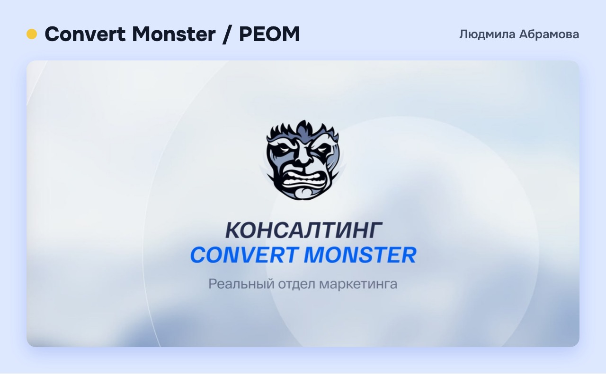
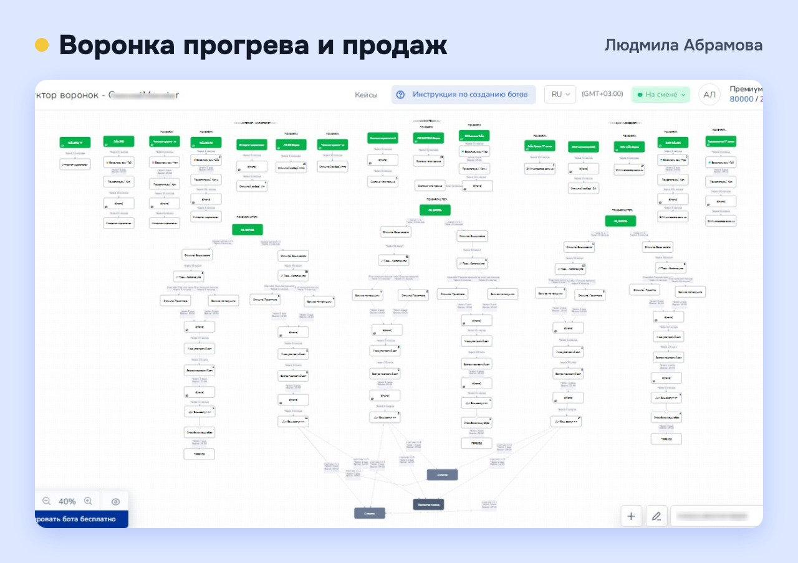

Раньше вступление шло через онлайн-собеседование: несколько дней ожидания, ручная оценка кандидата, отправка ссылки на оплату.
Я автоматизировала процесс ботом на Salebot в Telegram и ВКонтакте. Бот собирает анкету, рассказывает о клубе, выдаёт ссылку на оплату, а неподходящим заявкам вежливо отказывает. Ответы через API уходят в GetCourse, куратору приходит уведомление.
Результат: вступление сократилось с нескольких дней до нескольких минут.
2. Техническое ведение онлайн-школы на GetCourse
Полное ведение платформы: новые продукты и предложения, контроль оплат, рассылки, страницы, сборка курсов и уроков, создание промоакций и ботов под потребности клуба по подписке, техническая поддержка пользователей.
Автоматизировала ключевые процессы: рекуррентные платежи, контроль пропущенных оплат, задачи куратору по каждой новой анкете. Собрано 5–7 курсов, более 200 уроков.
Результат: резиденты больше не теряют доступ из-за забытого платежа.
3. Куратор клуба
Принимаю новых резидентов, организую еженедельные онлайн-эфиры, нетворкинг и бизнес-игры, помогаю резидентам находить нужные материалы.
Результат: за время моего кураторства резидентов стало втрое больше.

Convert Monster — агентство интернет-маркетинга Антона Петроченкова, автора книг «Идеальный Landing Page» и «Маркетинг для немаркетологов». РЕОМ («Реальный отдел маркетинга») — его направление для собственников бизнеса: отделы маркетинга под ключ. Веду техническую часть проекта больше трёх лет.
Техническая настройка и отправка рассылок по email, через ботов, SMS и голосовые: регулярных информационных и прицельных под конкретные задачи.
Результат: одно сообщение доходит до аудитории сразу по нескольким каналам.
2. Вебинары и автовебинары полным циклом
Беру на себя весь технический процесс: от настройки трансляции до проведения эфира с полным сопровождением спикера, всех рассылок и напоминаний. По итогам прошедшего эфира собираю автовебинарную воронку на GetCourse или Bizon 365.
Результат: многоканальная система напоминаний работает без сбоев, а один эфир продолжает продавать в записи.
3. Создание курсов
Весь цикл: от создания продукта и предложения до сборки курса с уроками, настройки доступов и проверки домашних заданий.
Результат: курс готов к продаже и обучению без доработок со стороны команды.
Инструменты
Трансляции и автовебинары
StreamYardZoomBizon 365GetCourseEdbot
Рассылки и напоминания
SalebotSendsaySMS-центрЗвонобот
Конкретные показатели обсуждаю при личном разговоре.
Проект Convert Monster / РЕОМ. Одна из первых больших автоматизаций агентства в Salebot.

Задача: прогревать людей перед продажей. Люди приходят из рекламы и рассылок, и каждому нужно выдать обещанный материал и довести до заявки.
Что сделала
Продумала, как всё будет работать, и собрала бота в Salebot для Telegram.
Настроила точки входа: в зависимости от источника запускается нужная воронка.
Настроила переключение воронок: бот помнит, какую воронку человек уже прошёл, и переводит на следующую. Всего три воронки, без повторов.
Настроила выдачу материалов по разным правилам: одни гайды и чек-листы человек получает сразу после входа в бот, другие только после пятидневной воронки. Бот сам определяет, кому и когда что выдать.
По ходу прогрева человек получает видеоматериалы, в конце ссылку на сайт, где оставляет заявку на консультацию или покупку.
Как рос проект
Начинали с 5–6 точек входа. Реклама приносила заявки и продажи, поэтому агентство подключало новые источники, а я добавляла под них новые точки входа и материалы. Сейчас их 18.